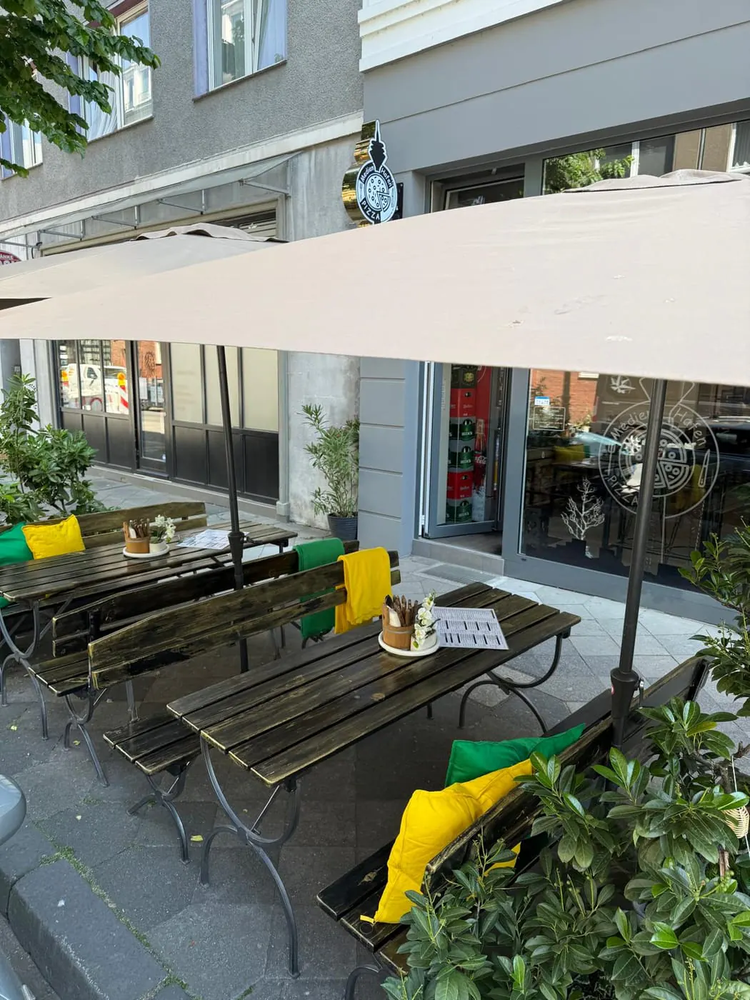

Standort
Medienhafen
Wupperstraße 14 in Düsseldorf-Unterbilk, nahe Rheinufer, Landtag NRW und der Architektur des Medienhafens.
Über uns · Familienbetrieb seit 1998
Seit 1998 steht die Pizzeria am Medienhafen für italienische Küche in Düsseldorf. Als Familienbetrieb verbinden wir die Erfahrung aus mehr als 25 Jahren mit der Aufmerksamkeit, die ein gutes Essen jeden Tag aufs Neue verlangt. Unser Anspruch ist dabei angenehm bodenständig geblieben: sorgfältig ausgewählte, frische Zutaten, handwerkliche Zubereitung und Gerichte, die ihren Charakter nicht hinter unnötigen Effekten verstecken.
Im Mittelpunkt steht der Holzofen. Er prägt nicht nur den Duft im Restaurant, sondern auch die Art, wie unsere Pizza entsteht. Hitze, Teig und Belag müssen zusammenpassen; aus einfachen Zutaten wird erst durch das Handwerk eine Pizza mit eigenem Geschmack. Diese Arbeitsweise gehört für uns zur italienischen Tradition. Sie ist der Grund, warum Gäste, die nach Holzofenpizza in Düsseldorf suchen, bei uns eine umfangreiche Auswahl von der Margherita bis zur Calzone finden.
Tradition bedeutet für uns nicht Stillstand. Unsere Speisekarte verbindet vertraute Klassiker mit der Vielfalt, die Gäste von einem italienischen Restaurant erwarten: Holzofenpizza, Pasta, Antipasti, frische Salate und ausgewählte Weine. Manche Gäste kommen für ihre langjährige Lieblingspizza, andere entdecken uns bei einem Spaziergang durch den Medienhafen. Beide sollen sich auf ehrliche Küche, nachvollziehbare Zutaten und eine persönliche Atmosphäre verlassen können.
Die Pizzeria ist über die Jahre Teil ihres Viertels geworden. Unterbilk, Hafen und Rheinufer verändern sich, doch der Kern unseres Restaurants bleibt derselbe: Wir möchten ein unkomplizierter Ort für Mittagspause, Abendessen, Treffen mit Familie oder Freunden und den spontanen Hunger auf italienische Pizza sein. Wer uns zum ersten Mal besucht, soll sich ebenso willkommen fühlen wie Stammgäste, die seit vielen Jahren zu uns kommen.
Handwerkliche Zubereitung zeigt sich für uns in vielen kleinen Entscheidungen. Ein Belag soll zur Pizza passen, Pasta und Soße sollen zusammen ein vollständiges Gericht ergeben, und eine Vorspeise soll den Appetit wecken, ohne sich in den Vordergrund zu drängen. Deshalb beschreiben wir die Gerichte in unserer Speisekarte mit ihren wesentlichen Zutaten. Gäste können so schon vor dem Besuch erkennen, welche Pizza oder Pasta zu ihrem Geschmack passt, und bei Fragen zu Allergenen oder Zusatzstoffen gezielt nachfragen.
Als Familienbetrieb denken wir nicht in kurzfristigen Trends, sondern in Beziehungen. Viele Begegnungen wiederholen sich: ein bekanntes Gesicht in der Mittagspause, Familien am Wochenende oder Besucher, die beim nächsten Aufenthalt in Düsseldorf wiederkommen. Diese Kontinuität ist ein wichtiger Teil unserer Geschichte. Sie entsteht nicht durch große Worte, sondern durch verlässliche Öffnungszeiten, eine nachvollziehbare Karte und Gerichte, die mit derselben Aufmerksamkeit zubereitet werden wie beim letzten Besuch.
Italienische Tradition ist dabei kein dekoratives Thema, sondern eine praktische Orientierung. Gute Zutaten dürfen erkennbar bleiben, Rezepte sollen verständlich sein und gemeinsames Essen braucht einen passenden Rahmen. Genau diese Haltung verbindet die ersten Jahre der Pizzeria mit der Gegenwart. Seit 1998 entwickeln wir unser Angebot weiter, ohne die Grundlage aus Holzofen, frischer Zubereitung und persönlichem Service aus den Augen zu verlieren.
Düsseldorf-Unterbilk
Unser Standort liegt in der Wupperstraße 14, 40219 Düsseldorf – in Unterbilk und direkt im Umfeld des Medienhafens. Damit ist die Pizzeria gut erreichbar für Menschen, die im Hafen arbeiten, die Architektur am Rhein erkunden, den Landtag NRW besuchen oder nach einem Restaurant für den Abend in Düsseldorf suchen.
Vom Rheinufer, dem Landtag und den markanten Gebäuden des Medienhafens führt der Weg in wenigen Minuten in die Wupperstraße. Wer nach Pizza am Rhein, einem Restaurant im Medienhafen oder italienischem Essen in Unterbilk sucht, findet bei uns eine feste Adresse mit klar veröffentlichten Öffnungszeiten, vollständiger Speisekarte und direkter Telefonnummer.
Gerade die Lage zwischen Wohnviertel, Bürostandort und Ausflugsziel macht den Charakter der Pizzeria aus. Mittags geht es oft um eine verlässliche Pause mit kurzen Wegen, abends um gemeinsames Essen und etwas mehr Zeit. Am Wochenende verbinden viele Gäste ihren Besuch mit einem Weg durch den Hafen oder am Rheinufer. Unsere Küche bleibt in all diesen Situationen dieselbe: frisch zubereitet, italienisch geprägt und nahbar.
Unterbilk gehört zu den Düsseldorfer Stadtteilen, in denen Alltag und Ausgehen dicht beieinanderliegen. Von den Wohnstraßen rund um den Kirchplatz bis zum Rhein und den Bürogebäuden im Hafen sind es kurze Wege. Unsere Pizzeria liegt an dieser Verbindung. Dadurch erreichen uns sowohl Menschen aus dem Viertel als auch Gäste aus anderen Teilen Düsseldorfs, die vor oder nach ihrem Besuch am Hafen italienisch essen möchten.
Für die Anreise stehen auf der Startseite eine eingebettete Standortkarte und ein externer Kartenlink bereit. Da sich Verkehr, Baustellen und verfügbare öffentliche Parkplätze im Medienhafen ändern können, lohnt sich vor der Fahrt ein Blick auf die aktuelle Route. Wer mit öffentlichen Verkehrsmitteln oder zu Fuß unterwegs ist, kann den Restaurantbesuch gut mit Zielen am Rheinufer verbinden. Eigene Parkplätze werden auf dieser Website nicht zugesichert.
Die vollständige Adresse, Telefonnummer und Öffnungszeiten werden auf allen relevanten Seiten einheitlich angegeben. Das ist nicht nur für Gäste hilfreich, sondern verhindert auch Missverständnisse bei der digitalen Suche nach einem Restaurant am Hafen in Düsseldorf. Wenn an Feiertagen oder aus besonderem Anlass abweichende Zeiten gelten könnten, empfehlen wir vor einem längeren Anfahrtsweg einen kurzen telefonischen Abgleich.
Standort
Wupperstraße 14 in Düsseldorf-Unterbilk, nahe Rheinufer, Landtag NRW und der Architektur des Medienhafens.
Küche
Holzofenpizza, Pasta, Antipasti, Insalate und italienische Spezialitäten mit täglich frisch zubereiteten Zutaten.
Erfahrung
Mehr als 25 Jahre handwerkliche Zubereitung, traditionelle Rezepte und persönliche Gastfreundschaft im Familienbetrieb.
Unsere Küche
Die Speisekarte ist bewusst vielseitig, bleibt aber klar italienisch. Jede Kategorie hat ihren eigenen Schwerpunkt, von der Pizza aus dem Holzofen bis zu Pasta, Vorspeisen und Salaten.
Unsere Pizzen werden im Holzofen gebacken. Die regulären Pizzen haben einen Durchmesser von etwa 29 Zentimetern und werden mit Tomate, Käse und Oregano zubereitet; weitere Zutaten unterscheiden sich je nach Gericht. Die Auswahl reicht von klassischen Varianten wie Margherita, Salami und Tonno bis zu reich belegten Pizzen wie Valentino, Calabrese, Quattro Stagioni oder unserer Calzone.
Wer eine italienische Pizza in Düsseldorf, Pizza im Medienhafen oder Pizza in Unterbilk sucht, kann Zutaten, Preise und deklarierte Allergene direkt in der vollständigen Speisekarte vergleichen.
Bei der Pasta stehen verschiedene Nudelsorten und Zubereitungen zur Wahl: Spaghetti, Penne, Tagliatelle, Tortellini, Gnocchi sowie Lasagne und Ofengerichte. Tomatensoße, Bolognese, Pesto, Käse, Gemüse, Fisch und Meeresfrüchte geben den einzelnen Gerichten ihren Charakter.
Damit ist unsere Karte auch für Gäste interessant, die gezielt nach Pasta in Düsseldorf oder italienischer Pasta im Medienhafen suchen. Die Beschreibungen in der Speisekarte zeigen transparent, welche Zutaten für das jeweilige Gericht aufgeführt sind.
Zu einem italienischen Essen gehören für uns auch Vorspeisen und frische Salate. Auf der Karte stehen unter anderem Focaccia al Rosmarino, Melanzane Parmigiana, Caprese und Bruschetta. Verschiedene Insalate ergänzen das Angebot – als Vorspeise, leichte Mahlzeit oder Begleitung zur Pizza. Zutaten und Allergenkennzeichnungen sind bei den einzelnen Positionen aufgeführt.
Täglich frische Zubereitung ist die Grundlage unserer Küche. Wir arbeiten mit vertrauten italienischen Zutaten wie Tomaten, Mozzarella, Parmesan, Basilikum und Olivenöl sowie mit Gemüse, Fleisch, Fisch und Meeresfrüchten entsprechend der jeweiligen Rezeptur. Zum Essen bieten wir Getränke sowie Rot- und Weißwein an. Die aktuelle Auswahl erfragen Sie gern vor Ort.
Vom Ofen auf den Tisch
Eine gute Speisekarte hilft bei der Entscheidung, ohne das Essen mit langen Versprechen zu überladen. Deshalb nennen wir bei unseren Pizzen, Pastagerichten, Antipasti und Salaten die prägenden Zutaten. Bei der Pizza kommt die gemeinsame Grundlage aus Tomate, Käse und Oregano hinzu; bei Pasta zeigt die Beschreibung, welche Soße und weiteren Bestandteile zum Gericht gehören. Preise stehen direkt bei der jeweiligen Position.
Die Allergen- und Zusatzstoffkennzeichnung ist in einem eigenen Bereich der Speisekarte erklärt. Sie dient der Orientierung, ersetzt bei einer Allergie oder starken Unverträglichkeit aber nicht das persönliche Gespräch. Rezepturen, einzelne Produkte oder Produktionsbedingungen können sich ändern. Bitte sprechen Sie uns deshalb vor der Bestellung an, wenn bestimmte Zutaten für Sie ausgeschlossen werden müssen.
Auch vegetarische Auswahl lässt sich anhand der aufgeführten Zutaten finden. Mehrere Pizzen, Pasta-Varianten, Antipasti und Salate werden ohne genannte Fleisch- oder Fischzutaten beschrieben. Wir bieten keine veganen Gerichte an. Weil Käse, Soßen und andere Bestandteile für unterschiedliche Ernährungsweisen relevant sein können, geben wir keine pauschale Eignung für glutenfrei oder laktosefrei an. Im Zweifel klären wir die aktuelle Zubereitung gern direkt.
Diese Transparenz gehört zu unserem Qualitätsverständnis. Frische Zutaten und traditionelle Rezepte sind wichtig; ebenso wichtig ist, dass Gäste wissen, was sie bestellen. Die Verbindung aus sichtbarer Speisekarte, erreichbarer Telefonnummer und persönlicher Auskunft macht die Planung vor dem Besuch einfacher – ganz gleich, ob es um eine schnelle Pizza, ein Pastagericht oder ein gemeinsames italienisches Essen geht.

Qualität & Atmosphäre
Ein Restaurantbesuch beginnt nicht erst mit dem ersten Teller. Er beginnt mit dem Gefühl, willkommen zu sein, mit dem Duft aus dem Holzofen und mit einem Platz, an dem man gern bleibt. In unserem Gastraum und auf der Terrasse möchten wir genau diese unkomplizierte Atmosphäre schaffen.
Unsere Küche eignet sich für die schnelle Pizza in der Mittagspause ebenso wie für ein ruhiges Essen am Abend. Familien, Paare, Kolleginnen und Kollegen oder Besucher des Medienhafens finden eine Speisekarte, auf der klassische und vegetarisch wählbare Gerichte nebeneinanderstehen. Wer Fragen zu Zutaten, Allergenen oder individuellen Wünschen hat, spricht uns am besten direkt an.
Qualität heißt für uns vor allem Konsequenz: traditionelle Rezepte respektieren, Zutaten frisch verarbeiten und jedes Gericht sorgfältig zubereiten. Seit mehr als 25 Jahren ist das die Verbindung zwischen unserer Geschichte und dem, was heute auf den Tisch kommt.
Gut zu wissen
Reservierungsanfragen nehmen wir telefonisch unter +49 211 30 33 852 entgegen. Rufen Sie am besten frühzeitig an, besonders wenn Sie mit mehreren Personen kommen möchten.
Die Pizzeria am Medienhafen verfügt über Sitzplätze auf der Terrasse. Da die Nutzung vom Wetter und von der aktuellen Situation abhängt, empfehlen wir bei einem gezielten Terrassenwunsch einen kurzen Anruf.
Akzeptierte Zahlungsarten können sich ändern. Bitte erfragen Sie die aktuell möglichen Zahlungsarten kurz telefonisch unter +49 211 30 33 852.
Telefonische Bestellungen sind möglich. Ob und wann Ihr gewünschtes Gericht zur Abholung bereitsteht, stimmen Sie bitte direkt bei der Bestellung unter +49 211 30 33 852 ab.
Die Pizzeria liegt innerstädtisch im Düsseldorfer Medienhafen. Nutzen Sie die öffentlichen Parkmöglichkeiten im Umfeld und beachten Sie die aktuelle Beschilderung; eigene Stellplätze werden auf dieser Website nicht zugesichert.
Ja. Auf der Speisekarte stehen mehrere Gerichte ohne aufgeführte Fleisch- oder Fischzutaten, darunter verschiedene Pizzen, Pasta, Antipasti und Salate. Bei besonderen Ernährungsanforderungen oder Unverträglichkeiten sprechen Sie uns bitte direkt an.
Nein. Wir bieten keine veganen Gerichte an.
Besuch planen
Sie finden uns in der Wupperstraße 14, 40219 Düsseldorf. Die aktuellen Öffnungszeiten, die Standortkarte und alle Gerichte stehen auf der Startseite. Für Reservierungsanfragen und telefonische Bestellungen erreichen Sie uns direkt.